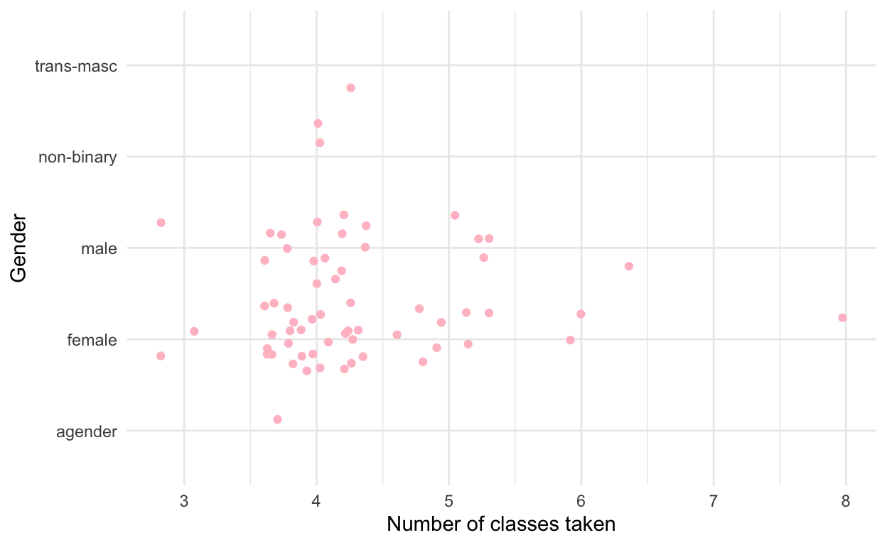
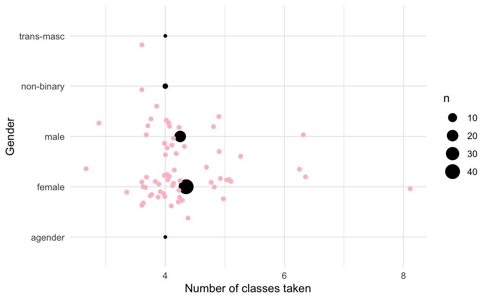

Completed exercises for the sixth lab
This document is meant to be used to practice after you have completed the tutorial for today’s lab. Make sure to put your name as the author of the document, above!
If you intend to work on these exercises while referring to the tutorial, there are instructions on the wiki on how to do so. You may also want to refer to past labs. Don’t forget that previous labs are linked to on the main labs website.
In the tutorial, you practiced with removing NAs, identifying errors in code, and some more advanced plots. In today’s exercises, you’ll reflect on that.
I invite you to turn in this document on Brightspace, where I will provide some basic feedback. You do not need to do this, but you may find it useful. As always, a version of these exercises with my answers will be posted at the end of the week to the lab website: https://faculty.bard.edu/~jdainerbest/psy-203/labslist.html
I encourage you to do two things as you work through this document: (1) Save it frequently! Hit the disk image above to save, hit Command/Ctrl and s, or go to the File menu and click save. When the document is saved, the title of it will go from red to black. (2) Practice Knitting the document by hitting the Knit button. You can do it now—it’ll create an HTML file in the folder where this file lives. Knitting will both help to identify problems and provide a complete document for me to review.
As always, you must load packages if you intend to use their functions. (“Turn on the lights.”) Run the following code chunk to load necessary packages for these exercises.
library(tidyverse)
# tidyverse loads these:
# library(dplyr)
# library(ggplot2)Import the newfriends dataset in the folder lab06/data/. You can do this by going to that and clicking on it, or by running code like: load("data/newfriends.Rdata"). This is a new kind of data: .Rdata files, which have R variables saved in them.
load("data/newfriends.Rdata")Refer to the common mistakes and errors list
newfriends dataset. It is the same as the one we used during the tutorial. Do the following:group_by() and summarize(), find the average number of siblings for people who do (or do not) eatmeat. Also find the sd(). Create a column for n = n(), too, and then calculate the standard error. (All within the same summarize() call.) Just have it print to the screen to make sure it’s right. Once it is, assign it to a new named variable so it’s saved to the Global Environment. Remove NAs where necessary using one of the methods discussed in the tutorial. (Make sure to create a code chunk below this for this code. Remember: you can do this from the Insert menu in this panel [click on R], or by pressing Control (or Command), Option, and i. Be sure there is a blank line above and below the code chunk.)Note: when using group_by() %>% summarize() in RStudio, you will likely get a warning that “summarise() ungrouping output (override with .groups argument)”. That is fine! It’s not an error; it’s just R telling you what it’s doing. If you really want to, you can add , .groups = "drop_last" and it will stop giving you the error.
meateaters <- newfriends %>%
filter(! is.na(eatmeat)) %>%
group_by(eatmeat) %>%
summarize(mean = mean(siblings),
sd = sd(siblings),
n = n(),
sem = sd/sqrt(n))ggplot() plotting the results from the summary you just made (I’d put eatmeat on the x-axis and your means on the y-axis.). Add on geom_col() and geom_errorbar(), as well as a theme and labs(). Give it a meaningful title that explains your findings. Do all of this in a code chunk that you create below this.
ggplot(meateaters, aes(x = eatmeat, y = mean)) +
geom_col() +
geom_errorbar(aes(ymin = mean - sem, ymax = mean + sem),
width = .3, size = 1.5) +
theme_minimal() +
labs(x = "Participants' meat-eating habits", y = "Mean number of siblins",
title = "Relationship between number of siblings\nand whether participants eat meat")fill vary based on the n, by adding something like fill = n into the aes(). (“Something like” because you may or may not have called the variable n exactly.) Which aes(), you might ask? You can do it in an aes() call in the geom_col() parentheses, or in the original ggplot() one.
ggplot(meateaters, aes(x = eatmeat, y = mean, fill = n)) +
geom_col(color = "orange", size = 2) +
geom_errorbar(aes(ymin = mean - sem, ymax = mean + sem),
width = .3, size = 1.5) +
theme_minimal() +
labs(x = "Participants' meat-eating habits", y = "Mean number of siblins",
title = "Relationship between number of siblings\nand whether participants eat meat")color = "orange" into the geom_col() parentheses. Because it’s not based on a variable, it does not need to be inside aes() – and in fact, it should not be.fill = n above? What does it gain us?It shows us that different groups have different numbers of people in them—i.e., that we have many meat-eaters who responded but only a few non-meat-eaters or rare-meat-eaters.
How much variability we anticipate in the mean. This is an idea akin to 95% confidence intervals—a larger error bar demonstrates more variability in the sample and therefore less confidence in the mean being the true mean.
ggplot() with gender on the y-axis and number of classes (numclasses) on the x-axis, and add a geom_jitter(). Also add a theme, labs(), and add color to the points.
bidenvoters <- newfriends %>%
filter(votefor == "Biden/Harris")
ggplot(bidenvoters, aes(y = gender, x = numclasses)) +
geom_jitter(color = "pink") +
theme_minimal() +
labs(y = "Gender", x = "Number of classes taken")
group_by(gender) and use summarize() to get the mean, SD, n, and SEM for numclasses. Assign this to a new variable.
bidenvoters.meanclasses <- bidenvoters %>%
group_by(gender) %>%
summarize(
mean = mean(numclasses),
sd = sd(numclasses),
n = n(),
sem = sd / sqrt(n)
)geom_point() and set data = to the new data variable from question 6. Add a mapping aes() where x is the mean number of classes, y is the gender, and size = n.
ggplot(bidenvoters, aes(y = gender, x = numclasses)) +
geom_point(data = bidenvoters.meanclasses, aes(y = gender, x = mean, size = n)) +
geom_jitter(color = "pink") +
theme_minimal() +
labs(y = "Gender", x = "Number of classes taken")
That’s it!